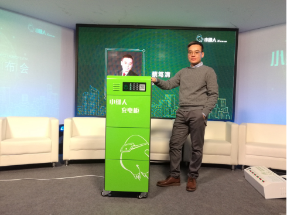

蔡笃满曾说过一句话——“生于平凡，成就伟大。”这句简单的话，足以概括蔡笃满和小绿人的这些年。
蔡笃满曾说过一句话——“生于平凡，成就伟大。”这句简单的话，足以概括蔡笃满和小绿人的这些年。
蔡笃满是海南人，曾经担任中央部委，从事大陆与台湾互联网和信息产业交流与合作相关工作超过十五年，擅长产业方向及战略规划。期间，他曾赴厦门市湖里区挂职，协助分管财税及产业园建设工作。多年的工作经历锻炼了蔡笃满的宏观战略能力，又使他积累了丰富的基层经验。
2015年，蔡笃满意识到互联网下半场在产业互联网，最可能实现产业互联网的方向是新能源互联网。他希望能借助新能源互联网、产业互联网的巨大势能，实现中国创业公司在材料科学、电化学等基础科技领域领先于世界的梦想。
同年，蔡笃满关于“电动自行车智能充电”的创业想法逐渐成形，执行力爆表的他辞去了原本的工作，正式创立小绿人。
蔡笃满想做公共充电的设备，要防雨防雷，可供全天候使用，又要因地制宜，在户外摆放，最重要的还是安全问题。要实现这些想法并不容易，但理论基础坚实的蔡笃满决定迎难而上。
2018年1月，经过了三年的打磨，小绿人团队发布了电动自行车充电柜G1以及充电桩Z5两款智能充电设备，用于提供户外公共充电服务，并且在全国各大城市免费投放。这两款设备在为市民提供充电便利的同时，也注重保障用户的安全，颠覆了传统的电动自行车充电模式。
如今，小绿人已经成为行业内唯一一家将研发、生产、运营全链条打通并形成闭环的公司，被多个地方政府引入为市政基础设施，取得了巨大的成功。
蔡笃满曾经说过一句话——“生于平凡，成就伴大。”这句简单的话，足以概括他和小绿人的这些年。
